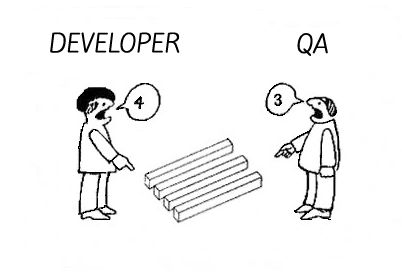

How To
|
John Riley Principle Agile Coach and Trainer |
 |
### Share Your Experience
---
 @ReadySetAgile
@ReadySetAgile @ReadySetAgile
@ReadySetAgile https://www.facebook.com/ReadySetAgile/
https://www.facebook.com/ReadySetAgile/ https://www.linkedin.com/company/ready-set-agile/
https://www.linkedin.com/company/ready-set-agile/
### Agenda
---
#### It's about automating Accptance Testing
---

#### What Agile automated testing is NOT
---
Automating "done" functionality

Responsibility
of QA only
of QA only

Daunting

Toolset
Heavy
Heavy
### Defining a Test-First Mindset
---

What does that mean?
##### A cycle of
##### developing tests
##### *before* any features
##### are developed
`(Test-Driven Development)`
The Cycle:
REDGREEN
REFACTOR
RED
- Test defined and written
- Test is run
- Test Fails!!
GREEN
- Code is written to
satisfy test passing
REFACTOR
- Code is re-written
according to best practices
WITHOUT CHANGING
BEHAVIOR
REFACTOR
- Code is re-written
according to best practices
WITHOUT CHANGING
BEHAVIOR
### Ingredients
---
### Baking Instructions
---
### Admiring our result (benefits)
---
### Scaling it
---
### Thank you!
---

john@ReadySetAgile.com - John Riley
@ReadySetAgile @ReadySetAgile https://www.facebook.com/ReadySetAgile/ https://www.linkedin.com/company/ready-set-agile/